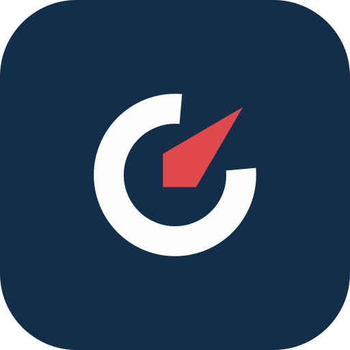

The Crawlvane mark
Three concepts built from the name. Crawl is how search engines and AI read the web. A vane shows which way the wind is blowing. Each mark avoids magnifiers, sparkles, robots and AI-style gradients.
Concepts
Why the C-Vane
It is the only concept that carries the initial, the vane and the product in one shape. The ring links straight to the score ring in reports, so the logo and the UI reinforce each other. It works as two solid shapes in one colour and stays readable at 16 px.
Distinct from AI and search marks
The opening sits on the diagonal, and the needle is a solid wedge rather than a bar, so it doesn't read as a G or a power symbol. It has no starburst, knot, asterisk or four-point star.
Mark, wordmark, lockup
The wordmark is Figtree Bold converted to outlines with −1.5% tracking. It has no font dependency. Cap height is half the mark height, and the gap between mark and word is 0.27 × the mark.
Colour versions
Favicon and app icon
Small sizes use a heavier ring, a wider gap and a larger needle on a Deep Navy tile, so the mark holds up on both light and dark browser tabs.

The 512 px app icon puts the mark on Deep Navy at 59% of the tile. It is safe for iOS and Android masks.
Clear space and minimum size
Keep clear space of half the mark height on every side. Nothing else should sit inside the dashed line.
Below 20 px, use the favicon artwork instead of the scaled-down mark. Below 96 px wide, use the mark on its own instead of the lockup.
SVG source
All files live in/logo. They use paths only, with no fonts, rasters or filters.